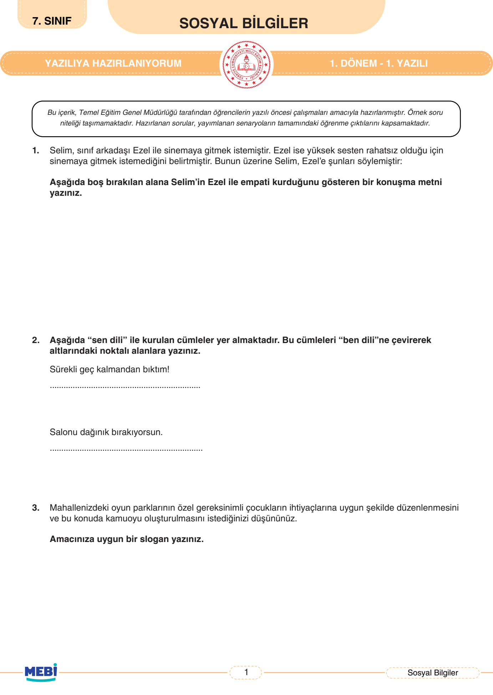
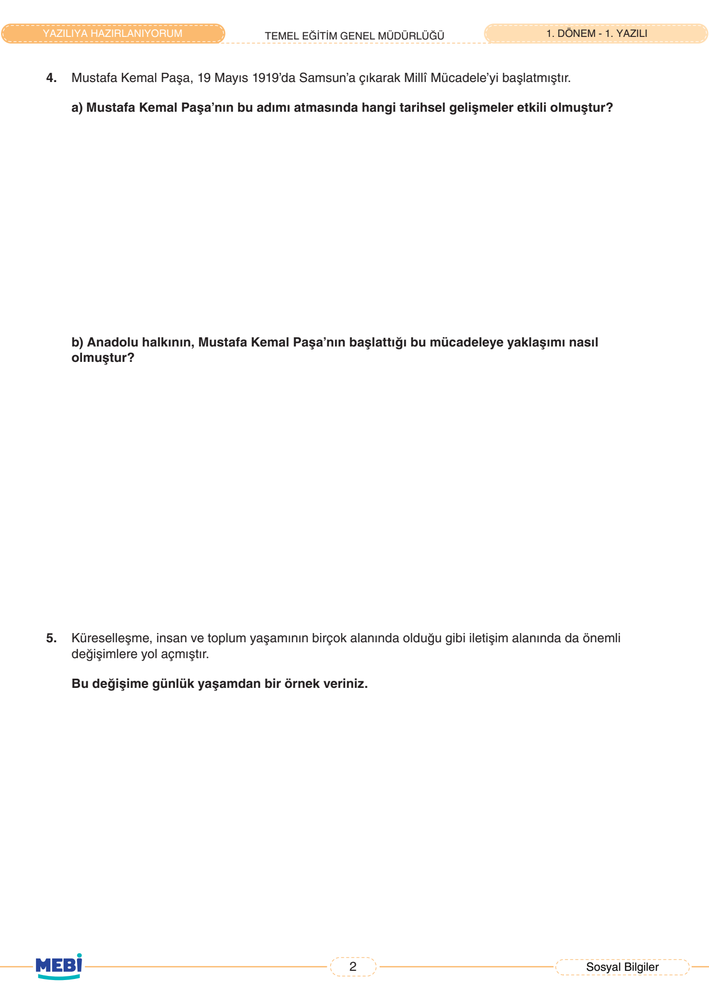
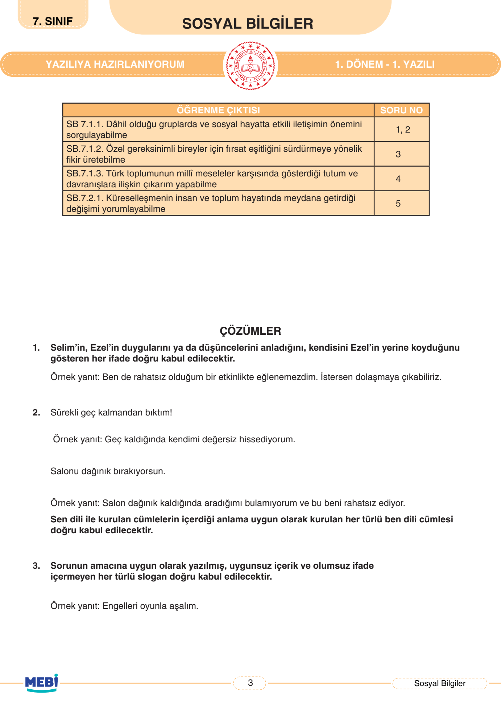
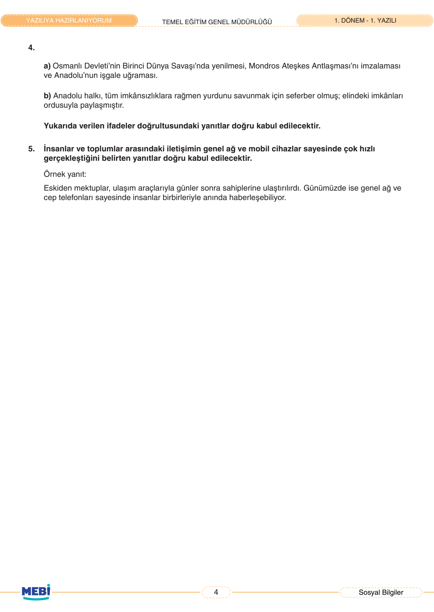

🌍 7. Sınıf Sosyal Bilgiler 1. Dönem 1. Yazılı (MEBİ)
Empati ve İletişim • Ben Dili • Milli Mücadele • Küreselleşme • 5 Sorunun Tamamı Çözümlü
0
Mevcut Puan / 100

Soru 1
Empati Kurma Konuşma Metni
20 Puan
📌 MEBİ Resmi Öğretmen Çözümü & Model Yanıt:
Örnek Empati Konuşması:
'Seni çok iyi anlıyorum Ezel. Yüksek sesin seni rahatsız etmesi çok doğal. Kendini kötü hissettiğin bir ortamda bulunmanı istemem. İstersen sinemaya gitmek yerine sakin bir kafede oturabilir ya da parkta yürüyüş yapabiliriz.'
'Seni çok iyi anlıyorum Ezel. Yüksek sesin seni rahatsız etmesi çok doğal. Kendini kötü hissettiğin bir ortamda bulunmanı istemem. İstersen sinemaya gitmek yerine sakin bir kafede oturabilir ya da parkta yürüyüş yapabiliriz.'
Puanlama:
Soru 2
Sen Dilini Ben Diline Çevirme
20 Puan
📌 MEBİ Resmi Öğretmen Çözümü & Model Yanıt:
• 1. Cümle: 'Sürekli geç kalmandan bıktım!'
→ Ben Dili: 'Buluşmalarımıza geç kaldığında vaktimi değerlendiremediğimi düşünüyor ve kendimi değersiz hissediyorum.'
• 2. Cümle: 'Salonu dağınık bırakıyorsun.'
→ Ben Dili: 'Salon dağınık kaldığında aradığım eşyaları bulmakta zorlanıyor ve dinlenemediğim için huzursuz oluyorum.'
→ Ben Dili: 'Buluşmalarımıza geç kaldığında vaktimi değerlendiremediğimi düşünüyor ve kendimi değersiz hissediyorum.'
• 2. Cümle: 'Salonu dağınık bırakıyorsun.'
→ Ben Dili: 'Salon dağınık kaldığında aradığım eşyaları bulmakta zorlanıyor ve dinlenemediğim için huzursuz oluyorum.'
Puanlama:
Soru 3
Özel Gereksinimli Bireyler İçin Slogan
20 Puan
📌 MEBİ Resmi Öğretmen Çözümü & Model Yanıt:
Örnek Sloganlar:
• “Engelleri oyunla aşalım, parklarda buluşalım!”
• “Her çocuğun hakkı oyun, engelsiz parklar kurun!”
• “Parkta engel yok, hepimize yer çok!”
• “Engelleri oyunla aşalım, parklarda buluşalım!”
• “Her çocuğun hakkı oyun, engelsiz parklar kurun!”
• “Parkta engel yok, hepimize yer çok!”
Puanlama:

Soru 4
Mustafa Kemal Paşa ve Anadolu Halkı
20 Puan
📌 MEBİ Resmi Öğretmen Çözümü & Model Yanıt:
a) Etkili Olan Tarihsel Gelişmeler:
Osmanlı Devleti’nin I. Dünya Savaşı’ndan yenik çıkması, Mondros Ateşkes Antlaşması’nın ağır şartları ve yurdun İtilaf Devletleri tarafından işgal edilmeye başlanması.
b) Anadolu Halkının Yaklaşımı:
Anadolu halkı tüm yokluk ve imkânsızlıklara rağmen vatanını savunmak için seferber olmuş; Kuvâ-yı Millîye birliklerini kurup elindeki tüm imkânları ordusuyla paylaşmıştır.
Osmanlı Devleti’nin I. Dünya Savaşı’ndan yenik çıkması, Mondros Ateşkes Antlaşması’nın ağır şartları ve yurdun İtilaf Devletleri tarafından işgal edilmeye başlanması.
b) Anadolu Halkının Yaklaşımı:
Anadolu halkı tüm yokluk ve imkânsızlıklara rağmen vatanını savunmak için seferber olmuş; Kuvâ-yı Millîye birliklerini kurup elindeki tüm imkânları ordusuyla paylaşmıştır.
Puanlama:
Soru 5
Küreselleşme ve İletişimdeki Değişim
20 Puan
📌 MEBİ Resmi Öğretmen Çözümü & Model Yanıt:
Günlük Yaşamdan Örnek:
Eskiden uzaktaki bir akraba veya arkadaşla haberleşmek için yazılan mektupların ulaşması günler hatta haftalar sürerken, günümüzde internet, akıllı telefonlar ve görüntülü arama uygulamaları sayesinde dünyanın diğer ucundaki insanlarla saniyeler içinde yüz yüze iletişim kurulabilmektedir.
Eskiden uzaktaki bir akraba veya arkadaşla haberleşmek için yazılan mektupların ulaşması günler hatta haftalar sürerken, günümüzde internet, akıllı telefonlar ve görüntülü arama uygulamaları sayesinde dünyanın diğer ucundaki insanlarla saniyeler içinde yüz yüze iletişim kurulabilmektedir.
Puanlama:

